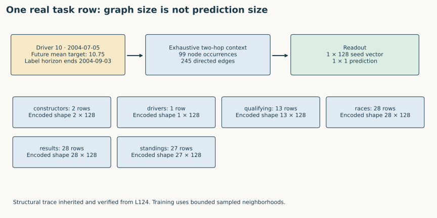
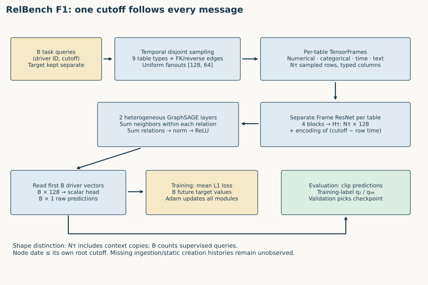
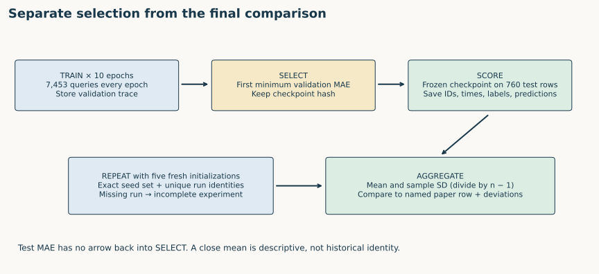
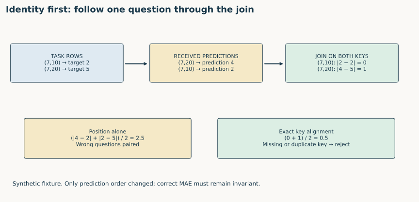
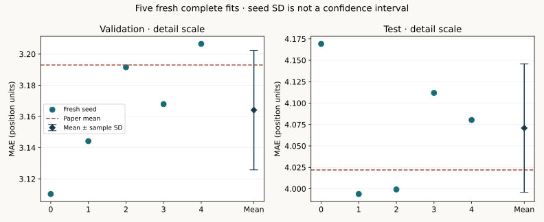

Year 4 · Quarter 1 · Lesson 130
Q1 checkpoint: run and defend the complete RDL pipeline
The win. Produce a defensible experiment packet for one complete RelBench task. You must explain how a database becomes a prediction, run the pipeline, and show why its reported score belongs to the intended queries.
Student lab · Executed solution · Checkpoint reference · Exact commands and protocol · Written defense template
1 · The checkpoint joins the quarter together¶
Lesson 122 made the database into a graph. Lesson 123 restricted context by time. Lesson 124 separated prediction queries from database rows. Lesson 125 encoded typed columns. Lesson 127 established the benchmark protocol, Lesson 128 matched the prediction head to the target, and Lesson 129 built the relational-feature competitor.
The missing skill is ownership of the chain. A passing training script is insufficient if you cannot identify the query, reconstruct its permitted information, explain its output, and independently verify the experiment report. This is the Q1 deliverable from the year-four plan, and prepares the instrumented forward pass of Lesson 131.
Recall before opening code. Why can one driver have several labels? Which rows receive loss? Which split chooses the checkpoint? Why does a future scheduled race differ from a future race result?
Read Fey et al., RDL blueprint for the database-to-graph-to-prediction argument. Read Robinson et al., RelBench v1, §3, Table 7 and Appendix B for this experiment. The former motivates the computation; the latter supplies the named numerical target.
Suggested route. First explain the task and trace one query without running code. Then implement the three checkpoint functions, run their checks and replay the author packet. Finally run the explicit full-training gate in the pinned environment and submit the written defense. The short replay and the longer fresh-training lane have separate completion records.
2 · Freeze the question before building the graph¶
In plain terms. A prediction is a question asked about a driver at a particular time. It is not a permanent property stored on that driver's node.
A query is the pair (driverId, cutoff). The cutoff is the time when a prediction is requested. The target is the driver's mean finishing position during the next 60 days, with outcomes in (cutoff, cutoff + 60 days]. Lower mean absolute error, or MAE, is better.
Worked example. Driver 10 at 2004-07-05 has an outcome window ending 2004-09-03. The same driver queried at another cutoff has another permitted history and another target. Store both key components at full timestamp precision; collapsing dates or grouping only by driver can silently combine different questions.
| Contract | Frozen value |
|---|---|
| Database / task | rel-f1 / driver-position |
| Complete query splits | 7,453 train / 499 validation / 760 test |
| Database through the test cap | 9 tables, 74,063 rows, 338,842 directed edges |
| Task loss and score | Training mean L1; evaluation MAE in finishing-position units |
| Fits | Five fresh seeds 0–4; ten full epochs per seed |
| Selection | First strictly improved validation MAE |
| Numerical comparison | Table 7 validation 3.193 / test 4.022; absolute mean tolerance 0.2 |
Freeze means deciding these values before inspecting the new test results. Hashes identify exact source and archive bytes. A changed setting creates another experiment; it does not silently replace this one.
Scope check. The released cohort uses future participation when defining eligible queries. Reproducing that cohort is not proving that the task can be deployed without knowing future participation. Event timestamps are available; real ingestion times and historical versions of mutable/static features are not. Keep these limits in the packet.
TODO 1 — query identity. Implement validate_queries: require the complete expected row count, unique (entity, time) keys and finite targets. Return keys in the task's order. The check deliberately repeats a driver at two times and rejects duplicate questions.
3 · Trace a real query through the model¶
A relational entity graph represents each table row as a typed node. A foreign key creates a directed link to its parent row; a reverse edge lets information flow back. Node types retain table identity. The graph is shared infrastructure, while each query specifies its own root and cutoff.
Sampling. Start at the driver root and gather incoming neighbors for two hops, with maximum per-relation fanouts [128, 64]. A fanout is a neighbor-count limit. The released loader samples uniformly among eligible neighbors. It constructs disjoint contexts for different query roots, so the same database row may occur more than once in a batch.
Time. Every dated row in a sampled context must satisfy row_time <= root_cutoff. The cutoff stays attached to the root at every hop. Labels describe later outcomes and are attached to supervised queries separately; they are not a contextual node feature.


The figure uses the real driver-10 query and its exhaustive two-hop context: 99 node occurrences and 245 directed edges. These are structural counts, not recorded hidden activations. Bounded stochastic training neighborhoods can differ. The notebook reconstructs this example from the complete archived graph and checks the original row and edge identities.
Model architecture · keep context count separate from output count¶
A TensorFrame stores typed columns for sampled rows. A separate four-block residual encoder for each table converts its numerical, categorical, timestamp and text features into 128-dimensional row vectors. A residual block combines a learned update with its input. It allows deeper transformations while retaining a direct path for the previous representation.
The relative-time encoder represents the age of a row with respect to its query cutoff. This time vector is added to that row's encoded features. Rows without recorded time do not gain a fabricated timestamp.


Diagram trace. Keep context count separate from query count. Which of the sampled rows become supervised root outputs? On a narrow screen, scroll the figure sideways.
Message passing. For each directed relation, GraphSAGE sums transformed information from neighbors. Relation-specific outputs are summed for each destination type, then normalized and passed through a rectified linear unit (ReLU), which replaces negative coordinates with zero. Repeat for two layers. The head maps the first B driver vectors to B scalar predictions; B is the number of supervised queries, not the number of context nodes.
def forward(
self,
batch: HeteroData,
entity_table: NodeType,
) -> Tensor:
seed_time = batch[entity_table].seed_time
x_dict = self.encoder(batch.tf_dict)
rel_time_dict = self.temporal_encoder(
seed_time, batch.time_dict, batch.batch_dict
)
for node_type, rel_time in rel_time_dict.items():
x_dict[node_type] = x_dict[node_type] + rel_time
for node_type, embedding in self.embedding_dict.items():
x_dict[node_type] = x_dict[node_type] + embedding(batch[node_type].n_id)
x_dict = self.gnn(
x_dict,
batch.edge_index_dict,
batch.num_sampled_nodes_dict,
batch.num_sampled_edges_dict,
)
return self.head(x_dict[entity_table][: seed_time.size(0)])
Predict the shapes. If one query gathers 99 nodes in total, should the loss contain 99 terms or one? Explain why a context row can influence a prediction without receiving its own direct supervised loss.
The code and diagram are inherited computation made explicit for this checkpoint. The notebook includes the complete model, graph constructor, trainer and underlying library primitives. In Lesson 131 you will instrument the actual intermediate activations rather than infer their shapes from the graph.
4 · Train, choose, and freeze¶
An epoch visits every training query once. Each mini-batch predicts only its root queries. Mean L1 loss averages abs(prediction - target) over those roots. Backpropagation computes gradients; Adam uses them to update the row encoders, temporal encoder, message-passing layers and prediction head together.
The released configuration uses Adam with learning rate 0.005 and batches of 512 queries. Every epoch must account for all 7,453 training queries. The final short batch still counts; a loop that silently skips it has changed the experiment.
for epoch in range(1,epochs+1):
model.train();loss_sum=0.;count=0
for batch in loaders['train']:
batch=batch.to(device);optimizer.zero_grad()
pred=model(batch,task.entity_table).view(-1)
loss=torch.nn.functional.l1_loss(pred.float(),batch[task.entity_table].y.float())
loss.backward();optimizer.step()
count+=len(pred);loss_sum+=float(loss.detach())*len(pred)
assert count==7453
val,_,_=predict(loaders['val'])
score=float(np.mean(np.abs(val-tables['val'].df[task.target_col].to_numpy())))
trace.append(dict(epoch=epoch,train_mae=loss_sum/count,val_mae=score,train_queries=count))
if score<best:best=score;state=copy.deepcopy(model.state_dict());selected=epoch
print(json.dumps(trace[-1]),flush=True)
model.load_state_dict(state);model.eval()
Validation is evaluated after each epoch. A checkpoint is a saved set of model parameters. Keep the first checkpoint whose validation MAE strictly improves on previous epochs. Equal scores retain the earlier checkpoint. The test score does not participate in this choice.


Predict before interacting. Hold the validation trace fixed. Can changing the reported test MAE legitimately change the selected checkpoint?
At inference, the released pipeline clips predictions to the training-label 2nd and 98th percentiles. Clipping limits extreme predictions; its bounds come from training labels. The selected model is then evaluated on all 499 validation and 760 test queries using the official task evaluator.
Scope check. A fresh sampled validation pass can differ from the validation value that selected the checkpoint. Preserve both values. Released feature statistics are fitted on the database through the test cap, rather than exclusively on training-era rows. Reproduce and disclose that rule; changing it is a separately named intervention.
5 · A plausible score can belong to the wrong rows¶
In plain terms. Before subtracting predictions from labels, prove that each prediction answers the same question as its label.
Worked example. Driver 7 has target 2 at time 10 and target 5 at time 20. Its predictions are 2 and 4 respectively. The absolute errors are 0 and 1, so MAE is (0 + 1) / 2 = 0.5. Reverse only the prediction-row order. Positional subtraction now gives (2 + 3) / 2 = 2.5, even though neither prediction changed.


Use a one-to-one join on both entity and cutoff. Reject missing, extra or duplicate keys before averaging. Never silently take an inner join: dropping difficult unmatched queries can make the remaining score look better.
TODO 2 — keyed MAE. Implement keyed_mae. Validate the task and prediction keys, require exact coverage, align predictions and compute the mean absolute error. The full fresh worker deliberately reverses prediction records before calling the canonical function; the notebook calls your implementation on the same complete author evidence.
The official evaluator and independent scorer answer complementary questions. The official evaluator defines the metric. The independent scorer checks both arithmetic and identity. An archive audit separately confirms that the stored labels, IDs and times equal the released task table.
6 · Decide what five runs establish¶
One successful fit can be lucky or incomplete. The selected experiment requires all five expected seeds. A seed controls the random initialization and stochastic sampling. A run UUID identifies an execution: two different seed labels attached to the same execution are not two fresh runs.
TODO 3 — reproduction verdict. Implement reproduction_verdict. Reject missing, unexpected or duplicate seeds, repeated run identities, incomplete epochs, nonfinite scores and negative errors. Then compute the mean and sample standard deviation, which divides squared deviations by n - 1. Compare each split's mean with its predeclared paper target.
CLOSE means abs(measured_mean - paper_mean) <= 0.2. OUTSIDE_TOLERANCE is an equally valid reported outcome. Neither status grants permission to change the tolerance after seeing the result. Seed standard deviation describes variation between fits; it is not a confidence interval and does not account for new databases or alternate time splits.
Predict before reading. Would complete original-model output agreement plus a close mean establish the exact historical training environment? Name one missing piece of evidence.
Fresh author execution: COMPLETE selected released-protocol experiment. Five new seeds, ten complete epochs each.
| Split | Mean MAE | Sample seed SD | Paper mean | Verdict |
|---|---|---|---|---|
| val | 3.164116 | 0.038287 | 3.193 | CLOSE |
| test | 4.070921 | 0.075000 | 4.022 | CLOSE |
| Seed | Selected epoch | Selection MAE | Final validation MAE | Test MAE |
|---|---|---|---|---|
| 0 | 10 | 3.110827 | 3.110300 | 4.169197 |
| 1 | 10 | 3.143624 | 3.144200 | 3.993888 |
| 2 | 8 | 3.192786 | 3.191587 | 3.999256 |
| 3 | 10 | 3.171409 | 3.167931 | 4.111958 |
| 4 | 7 | 3.206558 | 3.206561 | 4.080304 |
All 6,295 final predictions independently rescored; 403,895 training/evaluation query occurrences audited. Maximum original-model output discrepancy 3.81e-06. Pilot plus five-fit worker resource estimate USD 0.063100, excluding unitemized overhead; six reservations for the primary experiment. Notebook validation and one failed setup use the remaining two reservations within the USD10 plan. Evidence · Independent archive/SQL audit.
Portable full-training gate also verified: all 22 code cells executed in an isolated pinned T4 environment, including five additional full fits and independent scoring of 6,295 predictions. Its validation/test means are 3.171492/4.083289; these validation runs are kept separate from the primary experiment above. Exact bitwise repeatability is not established. Successful worker resources total USD0.104571; the failed setup retains a conservative USD0.812592 allowance. Unitemized overhead is separate. Gate evidence. Live Colab remains NOT_CHECKED.


The measured packet records source and archive hashes, all epoch traces, checkpoint hashes, fresh execution identities, original-model output checks and full-query predictions. Every actual batch also checks node identity, edge identity and its own root's temporal cutoff.
Scope check. This is a complete selected released-protocol replay. The exact historical training commit, package/random-state identity and whole-paper reproduction are NOT_ESTABLISHED. The other 29 RelBench tasks are NOT_RUN here. Live Colab and deployment remain NOT_CHECKED. Author execution leaves learner mastery PENDING_WRITTEN_DEFENSE.
7 · Compare with the manual-feature competitor carefully¶
Lesson 129 gives a stronger relational baseline than fitting trees to a driver's raw row. Its SQL aggregates relational histories into features, then tunes LightGBM. Before comparing, verify identical query keys and targets. Both methods should answer the same question even though their information processing and training budgets differ.
| Split | Fresh basic RDL MAE ± seed SD | L129 tuned manual FE MAE ± seed SD | FE minus RDL |
|---|---|---|---|
| val | 3.164116 ± 0.038287 | 2.777330 ± 0.027905 | -0.386786 |
| test | 4.070921 ± 0.075000 | 3.948917 ± 0.070469 | -0.122004 |
Negative differences favor manual FE. These are descriptive task-specific means, not a significance test or an equal-compute comparison. All 6,295 paired query identities and targets were rechecked. Comparison evidence.
This comparison reuses the explicitly identified Lesson 129 runs; it does not call them fresh L130 fits. Basic RDL and tuned manual features have different preprocessing scopes and compute budgets. Figure 3's human-study comparison can also use a boosted regression head, whereas Table 7's basic RDL is the present target. Matching task keys does not erase those distinctions.
Interpretation task. Explain what the observed difference says about this task. Then explain why it cannot establish that RDL universally beats manual feature engineering, or reproduce the human-effort saving of the original study. A close or unfavorable result belongs in the research record too.
8 · Diagnose before repairing¶
For each fault, first predict the artifact that should expose it. Then run the indicated check. Repair the cause and rerun; do not merely delete the check.
| Fault | First evidence to inspect | Why the printed MAE may mislead |
|---|---|---|
| Join predictions by driver only | Full (entity, time) key coverage |
Repeated drivers answer different questions |
| Choose the best test epoch | Epoch-selection trace | Test information influenced model selection |
| Train on context labels | Root count and target attachment | Context rows are not independent supervised queries |
| Permit a future neighbor | Per-root node-time audit | The model saw information unavailable at its cutoff |
| Average four completed seeds | Exact expected seed set | A failed or unfavorable run may be missing |
| Rename an old run as fresh | UUID, dispatch time and source hashes | A copied result does not demonstrate new execution |
The behavioral tests also reject deliberately corrupted implementations. This tests whether a guard can detect a plausible mistake, rather than merely accepting the reference solution.
9 · Submit a reproducible packet and defend it¶
Use the defense template. Attach the task/source/environment hashes, configuration, full traces, selected checkpoint hashes, query-keyed predictions and per-seed summary. Include the exact commands and the deviation ledger so another person can regenerate the result.
EXIT rubric — five required defenses.
- Question: state the query key, target window, eligibility rule, split sizes and the boundary of availability evidence.
- Computation: trace the real query from rows and foreign keys through typed encoders, two message-passing layers and one output. Distinguish context from supervision.
- Decisions: explain what trains parameters, what selects the checkpoint and when test labels enter evaluation. Account for every epoch and query.
- Evidence: show how source parity, temporal audits, keyed metrics and complete fresh seeds support different claims. Interpret the predeclared tolerance honestly.
- Research judgment: compare manual FE with basic RDL on this task, preserve protocol differences, and identify what another experiment would need to resolve.
All five need a correct explanation supported by your artifacts. A benchmark score alone is not a pass. A well-diagnosed result outside tolerance is more useful than an unexplained close score. Your agent will assess the written defense; automated preparation does not mark this checkpoint mastered.
Ask follow-up questions about any query, intermediate tensor, failed check or evidence claim. After a delay, explain the chain again without the diagram; that retrieval tests whether you can reconstruct it rather than recognize it.
Carry this forward. Instrument a real forward and backward pass to explain what is learned. Continue to Lesson 131.